פתרון מלא ל־14 שאלות החשבון הדיפרנציאלי בעבודת הקיץ: 7 שאלות על פולינומים ו־7 שאלות על פונקציות רציונליות. בכל סעיף מוסבר איך מגיעים לפתרון, ומתחתיו מופיעים הכללים שבהם השתמשנו. לחיצה על שם של כלל מובילה להסבר שלו בארגז הכלים. בסעיפי השרטוט מצורף גרף מדויק.
\((x^{n})' = nx^{n-1}\), ונגזרת של סכום היא סכום הנגזרות. כלל המכפלה: \((uv)' = u'v + uv'\). כלל המנה: \(\left(\dfrac{u}{v}\right)' = \dfrac{u'v - uv'}{v^{2}}\). וגם \(\left[(ax+b)^{n}\right]' = na(ax+b)^{n-1}\).
שיפוע המשיק לגרף בנקודה \(x_{0}\) שווה ל־\(f'(x_{0})\).
מחפשים נקודות שבהן \(f'(x)=0\), ובודקים בטבלה את סימן הנגזרת משני הצדדים. מעבר מ־\(-\) ל־\(+\) הוא מינימום, ומעבר מ־\(+\) ל־\(-\) הוא מקסימום. אם הסימן לא מתחלף, אין קיצון בנקודה.
היכן ש־\(f'(x)>0\) הפונקציה עולה, והיכן ש־\(f'(x)<0\) היא יורדת. אם נתון \(h'(x)=f(x)\), אז סימן \(f\) קובע היכן \(h\) עולה ויורדת.
משווים את ערכי הפונקציה בנקודות הקיצון שבתוך הקטע ובקצות הקטע. הגדול ביותר הוא המקסימום המוחלט, והקטן ביותר הוא המינימום המוחלט.
חיתוך עם ציר \(x\): פותרים \(f(x)=0\). בשבר, המונה מתאפס והמכנה לא. חיתוך עם ציר \(y\): מציבים \(x=0\), אם 0 בתחום ההגדרה.
פולינום מוגדר לכל \(x\). בפונקציה רציונלית מוציאים מהתחום את הנקודות שבהן המכנה מתאפס.
אם המכנה מתאפס ב־\(x=c\) והמונה לא, הישר \(x=c\) הוא אסימפטוטה אנכית. אם גם המונה מתאפס שם והגורם מצטמצם, בנקודה יש "חור", כלומר נקודת אי־רציפות סליקה, ולא אסימפטוטה.
כשמעלת המונה קטנה ממעלת המכנה, האסימפטוטה היא \(y=0\). כשהמעלות שוות, \(y=\) המנה של המקדמים המובילים.
אם \(f(-x)=f(x)\), הפונקציה זוגית והגרף סימטרי לציר \(y\). אם \(f(-x)=-f(x)\), היא אי־זוגית והגרף סימטרי לראשית.
\(f(x)+n\) מזיז את הגרף \(n\) למעלה. \(f(x+k)\) מזיז \(k\) שמאלה. \(c\cdot f(x)\) לא משנה את נקודות האפס ואת שיעורי ה־x של הקיצון, ואם \(c<0\) מקסימום הופך למינימום. \(-f(x)\) הוא שיקוף בציר \(x\), ו־\(-f(-x)\) הוא סיבוב ב־180° סביב הראשית.
התוצאות הסופיות, לבדיקה מהירה. הוכחות ושרטוטים מופיעים בפתרון המלא.
| שאלה | תשובות |
|---|---|
| פולינום 1 | \(a=1\) · \((0,0),(-3,0)\) · מינ' \((-3,0)\), מקס' \((-1,4)\) · עבור \(a=-2\): מקס' מוחלט \((1,68)\), מינ' מוחלט \((-1,-80)\), עוברת בראשית |
| פולינום 2 | \((\tfrac15,0),(\pm3,0),(0,9)\), \(a=-1\), \(b=9\) · מקס' \((-\tfrac53,\tfrac{49}{3})\), מינ' \((\tfrac95,-\tfrac{324}{25})\) · \(k=-\tfrac53\), \(n=-\tfrac{49}{3}\), מינ' של h: \((\tfrac{52}{15},-\tfrac{2197}{75})\) |
| פולינום 3 | מינ' \((\pm3,0)\), מקס' \((0,81)\) · \(f\cdot f'>0\) עבור \(-3<x<0\) או \(x>3\) · h עולה לכל x |
| פולינום 4 | מינ' \((1,-27)\), ב־\(x=-2\) אין קיצון · \(p=-2\) · מרחק 81 |
| פולינום 5 | \(a=4\) · מינ' \((1,-27)\), ב־\(x=4\) אין קיצון · \(g'>0\) עבור \(x<1\) |
| פולינום 6 | מקס' \((\pm5,576)\), מינ' \((0,-49)\), זוגית · חיתוך \((\pm2,135),(\pm6,455)\) · שטח 2405 |
| פולינום 7 | \(b=-27\), \(c=54\) · מקס' \((-3,108)\), מינ' \((3,0)\) · ל־g: מקס' מוחלט \((0,108)\), מינ' מוחלט \((3,0)\) |
| רציונלית 1 | \(x=1.5\), \(x=5\) · \((1,0),(6,0),(0,\tfrac85)\) · מקס' \((-9,\tfrac{100}{49})\), מינ' \((3,4)\) |
| רציונלית 2 | \(x\neq\pm1\) · \(x=\pm1\), \(y=2\) · מינ' \((0,0)\) · \((\pm\tfrac{\sqrt2}{2},2)\) · \(c=1\) |
| רציונלית 3 | \(a=-1\) · מקס' של g: \((\tfrac12,-\tfrac{15}{8})\) · ל־h מקס' ב־\(x=\tfrac12\) |
| רציונלית 4 | \(x\neq1,9\), \(x=1\), \(x=9\), \(y=0\) · \(b=10\), \(n=16\) · מינ' \((7,4)\), מקס' \((13,1)\) |
| רציונלית 5 | \(k=7\) או \(k=11\) · מינ' \((11,0)\), \(y=n\) · \(n=3\) · \(L=0,12,48\) |
| רציונלית 6 | \(a=-5\), \(b=4\) · \(x=0\) · \((\pm1,0)\) · מקס' \((\sqrt3,\tfrac{2\sqrt3}{9})\), מינ' \((-\sqrt3,-\tfrac{2\sqrt3}{9})\) · 4 פתרונות: \(k=\tfrac38\) או \(k=\tfrac{2\sqrt3}{9}\) |
| רציונלית 7 | \(x\neq3\), \(x=3\) · \((2,0),(0,-\tfrac43)\) · מקס' \((2,0)\), מינ' \((4,4)\) · g עולה ב־\(1<x<2.5\) וב־\(x>3\) |
\(f(x) = -ax^{3} - 6x^{2} - 9a^{3}x\) כאשר \(a<0\). שיפוע המשיק לגרף בנקודה \(x=0\) הוא \(-9\).
שיפוע המשיק בנקודה הוא ערך הנגזרת בנקודה. לכן גוזרים, מציבים \(x=0\) ומשווים ל־\(-9\). מקבלים משוואה בפרמטר \(a\).
שימוש ב: כללי גזירהשיפוע המשיק
לחיתוך עם ציר \(x\) מפרקים לגורמים: יש גורם משותף \(-x\) ואחריו ריבוע שלם. לקיצון גוזרים, משווים ל־0, ובונים טבלת סימנים כדי לדעת איזו נקודה היא מינימום ואיזו מקסימום.
| x | \(x<-3\) | \(-3\) | \(-3<x<-1\) | \(-1\) | \(x>-1\) |
|---|---|---|---|---|---|
| f′ | − | 0 | + | 0 | − |
| f | ↘ | מינ' | ↗ | מקס' | ↘ |
סקיצה בונים מהנקודות שמצאנו (חיתוך וקיצון), מתחומי העלייה והירידה ומההתנהגות בקצוות, שנקבעת לפי המקדם המוביל.
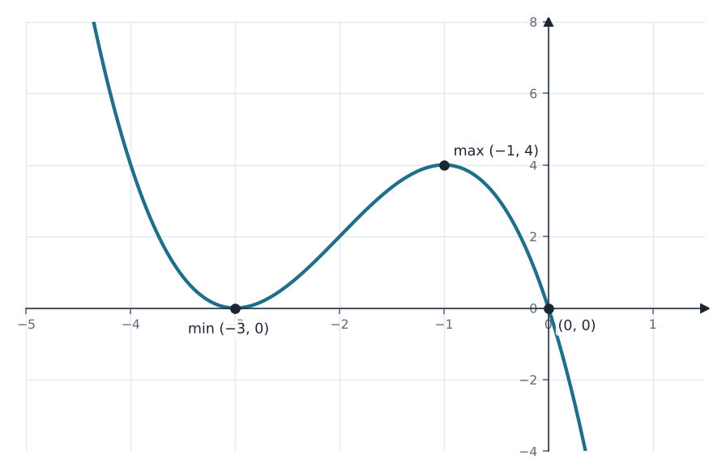
קיצון מוחלט בקטע סגור נמצא בנקודת קיצון שבתוך הקטע או בקצות הקטע. כאן הנגזרת חיובית תמיד (דיסקרימיננטה שלילית), ולכן אין קיצון פנימי, והקיצון המוחלט בקצוות.
שימוש ב: עלייה וירידהקיצון מוחלט בקטע סגור
\(f(x) = 5x^{3} + ax^{2} - 45x + b\) כאשר \(a,b\) פרמטרים.
הצורה המפורקת נותנת מיד את נקודות החיתוך עם ציר \(x\). את הפרמטרים מוצאים בפתיחת סוגריים והשוואת מקדמים לצורה הנתונה.
שימוש ב: חיתוך עם הצירים
כפל במספר חיובי מותח את הגרף אנכית: נקודות האפס ושיעורי ה־\(x\) של הקיצון לא משתנים, וערכי \(y\) מוכפלים. גוזרים כרגיל ומוצאים את הקיצון.
| x | \(x<-\tfrac53\) | \(-\tfrac53\) | \(-\tfrac53<x<\tfrac95\) | \(\tfrac95\) | \(x>\tfrac95\) |
|---|---|---|---|---|---|
| g′ | + | 0 | − | 0 | + |
| g | ↗ | מקס' | ↘ | מינ' | ↗ |
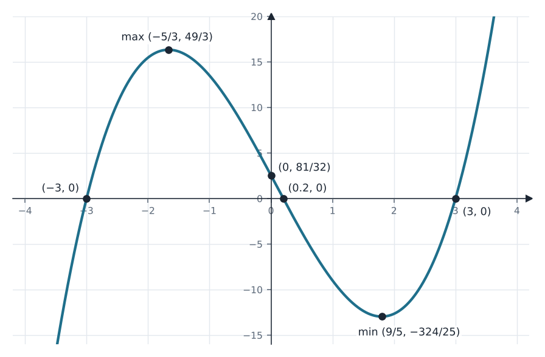
שימוש ב: מתיחה c·f(x)כללי גזירהנקודות קיצון
\(g(x+k)+n\) היא הזזה של הגרף: \(k\) יחידות שמאלה ו־\(n\) למעלה. בהזזה סוג הקיצון לא משתנה, ולכן המקסימום של \(g\) צריך לעבור לראשית. את \(-h(-x)\) מקבלים משני שיקופים: נקודה \((x,y)\) עוברת ל־\((-x,-y)\).
שימוש ב: הזזות ושיקופים
\(f(x) = (x^{2}-9)^{2}\).
ריבוע מתאפס רק כשהבסיס מתאפס, ולכן פותרים \(x^{2} - 9 = 0\).
שימוש ב: חיתוך עם הצירים
הפונקציה היא ביטוי בחזקה, ולכן גוזרים בכלל השרשרת: נגזרת החיצונית כפול נגזרת הפנימית. אחר כך מפרקים, משווים ל־0 ובונים טבלת סימנים.
| x | \(x<-3\) | \(-3\) | \(-3<x<0\) | \(0\) | \(0<x<3\) | \(3\) | \(x>3\) |
|---|---|---|---|---|---|---|---|
| f′ | − | 0 | + | 0 | − | 0 | + |
| f | ↘ | מינ' | ↗ | מקס' | ↘ | מינ' | ↗ |
שימוש ב: כללי גזירהנקודות קיצון
משתמשים בנקודות מסעיפים א ו־ב. הפונקציה ריבוע, ולכן הגרף לא יורד מתחת לציר \(x\), והיא זוגית ולכן סימטרית לציר \(y\).
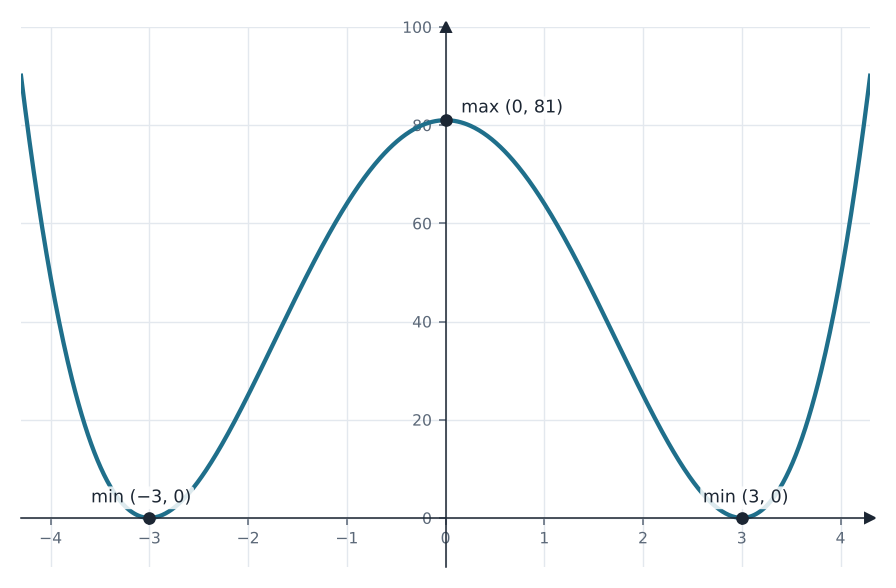
נקודות החיתוך של \(f'(x)\) עם ציר \(x\) הן הנקודות שבהן \(f'(x) = 0\), וכבר מצאנו אותן בסעיף ב.
מכפלה חיובית כששני הגורמים באותו סימן. כאן \(f(x) \ge 0\) תמיד, ולכן מספיק לדעת היכן \(f'(x) > 0\), ולהוציא את הנקודות שבהן \(f = 0\).
נתונה הנגזרת של \(h\), ולכן הסימן של \(f\) קובע היכן \(h\) עולה ויורדת. \(f\) היא ריבוע: לא שלילית, ומתאפסת רק בנקודות בודדות.
שימוש ב: h′ = f
\(f(x) = (x-2)\cdot(x+2)^{3}\).
פולינום מוגדר לכל ערך של \(x\): אין מכנה ואין שורש.
שימוש ב: תחום הגדרה
הפונקציה כבר מפורקת לגורמים, ולכן מכפלה שווה ל־0 כשאחד הגורמים שווה ל־0.
מכפלה של שני גורמים, ולכן כלל המכפלה. מוציאים גורם משותף כדי לקבל נגזרת מפורקת. נגזרת שמתאפסת ולא מחליפה סימן (גורם בריבוע) אינה נותנת קיצון.
| x | \(x<-2\) | \(-2\) | \(-2<x<1\) | \(1\) | \(x>1\) |
|---|---|---|---|---|---|
| f′ | − | 0 | − | 0 | + |
| f | ↘ | אין קיצון | ↘ | מינ' | ↗ |
שימוש ב: כלל המכפלהנקודות קיצון
מסמנים את נקודות החיתוך ואת המינימום. ב־\(x=-2\) הגרף חוצה את ציר \(x\) בצורה "שטוחה" (נקודת פיתול), כי הגורם \((x+2)^{3}\) בחזקה אי־זוגית.
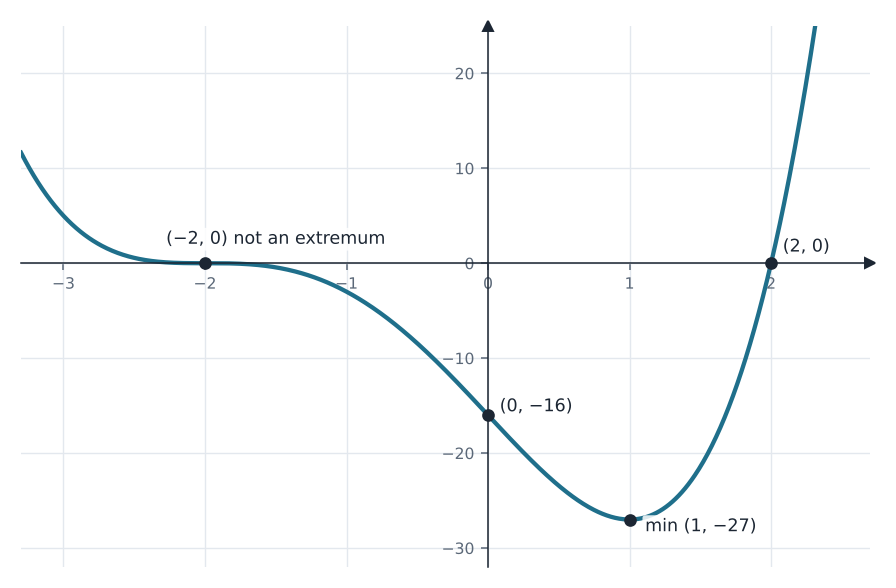
השלמה: בסעיף (2) נעלם שם הציר. הפתרון נותן את נקודות החיתוך עם שני הצירים.
כפל בקבוע מכפיל גם את הנגזרת, ולכן מהשיפוע ב־\(x=0\) מוצאים את \(p\). כפל במספר שלילי הופך את הגרף (שיקוף בציר \(x\) ומתיחה): נקודות האפס נשמרות, ומינימום הופך למקסימום.
שימוש ב: שיפוע המשיקc·f(x) עם c שלילי
\(f(x) = x(x-a)^{3}\), והנקודה \((5,5)\) על הגרף.
השלמה: בקובץ נעלם שם הפרמטר אחרי "מצאו את".
נקודה על הגרף מקיימת את משוואת הפונקציה, ולכן מציבים \(x=5\), \(y=5\) ופותרים.
הפונקציה מפורקת, ולכן משווים כל גורם ל־0.
מכפלה, ולכן כלל המכפלה, ואחריו הוצאת גורם משותף \((x-4)^{2}\).
שימוש ב: כלל המכפלה
נקודה שבה הנגזרת מתאפסת היא קיצון רק אם הנגזרת מחליפה שם סימן. הגורם \((x-4)^{2}\) אינו שלילי, ולכן הוא לא מחליף סימן.
| x | \(x<1\) | \(1\) | \(1<x<4\) | \(4\) | \(x>4\) |
|---|---|---|---|---|---|
| f′ | − | 0 | + | 0 | + |
| f | ↘ | מינ' | ↗ | אין קיצון | ↗ |
שימוש ב: נקודות קיצון
מסמנים את נקודות החיתוך ואת המינימום. ב־\(x=4\) הגרף חוצה את ציר \(x\) בנקודה "שטוחה", כי \((x-4)^{3}\) בחזקה אי־זוגית.
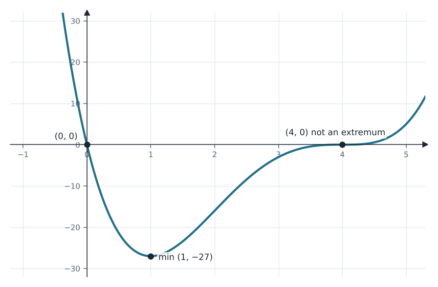
\(-f(x)\) היא שיקוף בציר \(x\): נקודות האפס נשמרות, ערכי \(y\) מחליפים סימן, ומינימום הופך למקסימום. גם הנגזרת מחליפה סימן.
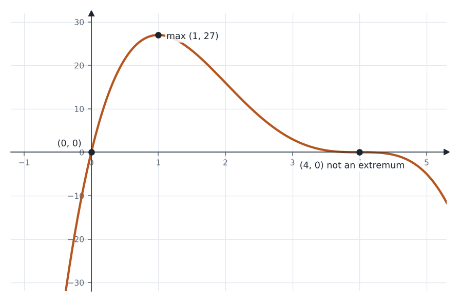
שימוש ב: שיקוף −f(x)
\(f(x) = (x^{2}-1)(49-x^{2})\) מוגדרת לכל \(x\), ו־\(g(x) = 10x^{2} + 95\).
הפונקציה מפורקת לשני גורמים, וכל אחד מהם הוא הפרש ריבועים.
נוח יותר לפתוח סוגריים ולגזור פולינום רגיל. הנגזרת יוצאת עם גורם משותף \(x\), ואחריו הפרש ריבועים.
| x | \(x<-5\) | \(-5\) | \(-5<x<0\) | \(0\) | \(0<x<5\) | \(5\) | \(x>5\) |
|---|---|---|---|---|---|---|---|
| f′ | + | 0 | − | 0 | + | 0 | − |
| f | ↗ | מקס' | ↘ | מינ' | ↗ | מקס' | ↘ |
שימוש ב: כללי גזירהנקודות קיצון
בודקים מה קורה כשמציבים \(-x\) במקום \(x\). אם מקבלים את \(f(x)\), הפונקציה זוגית.
שימוש ב: זוגית ואי־זוגית
משווים את שתי הפונקציות. מקבלים משוואה דו־ריבועית (רק \(x^{4}\) ו־\(x^{2}\)), ולכן מציבים \(t = x^{2}\).
\(f\) היא צורת "M" עם שני מקסימומים, ו־\(g\) היא פרבולה "מחייכת" עם קדקוד \((0,95)\). מסמנים את ארבע נקודות החיתוך מסעיף ד.
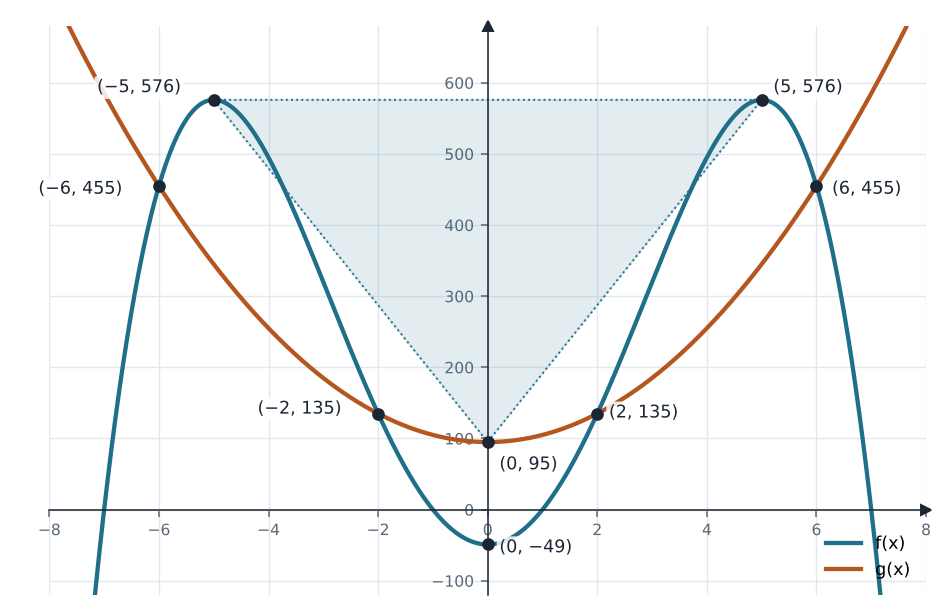
קדקודי המשולש הם שתי נקודות המקסימום של \(f\) והמינימום של \(g\). שני המקסימומים באותו גובה, ולכן הבסיס אופקי והגובה הוא הפרש שיעורי \(y\).
\(f(x) = x^{3} + bx + c\), ונתון \(f(x) = (x-3)^{2}(x+6)\).
השלמה: בקובץ נעלם הפרמטר \(c\).
פותחים את הצורה המפורקת ומשווים מקדמים לצורה \(x^{3} + bx + c\).
מהצורה המפורקת קוראים את נקודות האפס, ומהצורה הפתוחה את \(f(0)\).
הנגזרת היא פרבולה. פרבולה "מחייכת" חיובית מחוץ לשורשים ושלילית ביניהם, ומזה יודעים את סוג הקיצון.
שימוש ב: נקודות קיצון
מסמנים את נקודות החיתוך והקיצון. הגרף נוגע בציר \(x\) ב־\(x=3\) (שורש כפול) וחוצה אותו ב־\(x=-6\).
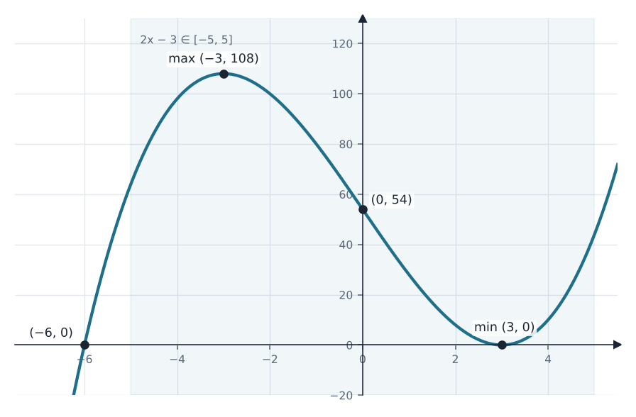
\(g(x) = f(2x-3)\) מקבלת את אותם ערכים כמו \(f\), רק בנקודות אחרות. מציבים \(t = 2x - 3\): כש־\(x\) בקטע \([-1,4]\), \(t\) בקטע \([-5,5]\). קיצון מוחלט בקטע סגור: בודקים את הקצוות ואת נקודות הקיצון שבתוך הקטע.
שימוש ב: קיצון מוחלט בקטע סגורגזירת f(ax+b)
\(f(x) = \dfrac{4x^{2} - 28x + 24}{2x^{2} - 13x + 15}\). מפרקים: \(f(x) = \dfrac{4(x-1)(x-6)}{(2x-3)(x-5)}\).
אסימפטוטה אנכית: המכנה מתאפס והמונה לא. אסימפטוטה אופקית כשמעלת המונה שווה למעלת המכנה: היחס בין המקדמים המובילים.
שימוש ב: אסימפטוטה אנכיתאסימפטוטה אופקית
פונקציה רציונלית מתאפסת כשהמונה מתאפס (בתוך התחום).
מנה של שני פולינומים, ולכן כלל המנה. מכנה הנגזרת הוא ריבוע ולכן חיובי, והסימן נקבע לפי המונה בלבד. בטבלת הסימנים צריך להכניס גם את האסימפטוטות.
| x | \(x<-9\) | \(-9\) | \(-9<x<1.5\) | \(1.5<x<3\) | \(3\) | \(3<x<5\) | \(x>5\) |
|---|---|---|---|---|---|---|---|
| f′ | + | 0 | − | − | 0 | + | + |
| f | ↗ | מקס' | ↘ | ↘ | מינ' | ↗ | ↗ |
שימוש ב: כלל המנהנקודות קיצון
קוראים את התחומים מטבלת הסימנים של סעיף ג, ומוציאים את הנקודות שאינן בתחום ההגדרה.
שימוש ב: עלייה וירידה
מסמנים אסימפטוטות, נקודות חיתוך וקיצון. כדאי לבדוק אם הגרף חוצה את האסימפטוטה האופקית: פותרים \(f(x) = 2\).
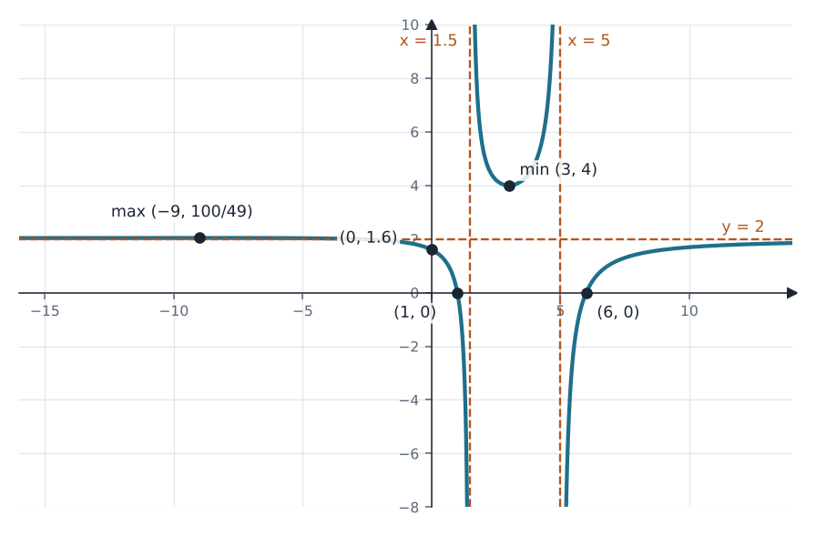
\(f(x) - 2\) היא הזזה של 2 יחידות למטה: שיעורי \(x\) לא משתנים, וכל ערך \(y\) קטן ב־2. החיתוך החדש עם ציר \(x\) הוא היכן ש־\(f = 2\).
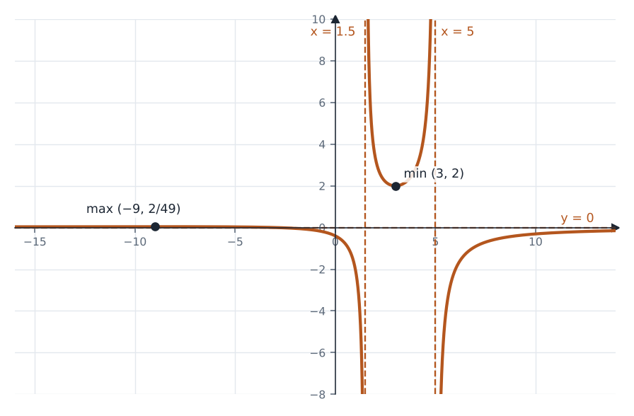
שימוש ב: הזזה אנכית
\(f(x) = \dfrac{2x^{4}}{x^{4} - 2x^{2} + 1} = \dfrac{2x^{4}}{(x^{2}-1)^{2}}\).
פונקציה רציונלית מוגדרת בכל מקום חוץ מהנקודות שבהן המכנה מתאפס. המכנה הוא ריבוע שלם.
שימוש ב: תחום הגדרה
אנכיות: היכן שהמכנה מתאפס והמונה לא. אופקית: מעלות שוות, ולכן יחס המקדמים המובילים.
שימוש ב: אסימפטוטה אנכיתאסימפטוטה אופקית
המונה \(2x^{4}\) מתאפס רק ב־\(x=0\), וזו גם נקודת החיתוך עם ציר \(y\).
כלל המנה, כשהמכנה בחזקה. מוציאים גורם משותף כדי לצמצם. כדי לקבוע את סוג הקיצון בודקים את סימן הנגזרת משני צדי \(x=0\).
שימוש ב: כלל המנהנקודות קיצון
הסימן של \(f'\) נקבע לפי המונה \(-8x^{3}\) והמכנה \((x^{2}-1)^{3}\). בונים טבלת סימנים עם הנקודות \(-1, 0, 1\).
| x | \(x<-1\) | \(-1<x<0\) | \(0<x<1\) | \(x>1\) |
|---|---|---|---|---|
| \(-8x^{3}\) | + | + | − | − |
| \((x^{2}-1)^{3}\) | + | − | − | + |
| f′ | + | − | + | − |
| f | ↗ | ↘ | ↗ | ↘ |
שימוש ב: עלייה וירידה
נקודת חיתוך עם האסימפטוטה האופקית היא פתרון של \(f(x) = 2\). אחרי הכפלה במכנה החזקות \(x^{4}\) מצטמצמות.
מסמנים את האסימפטוטות, המינימום בראשית ונקודות החיתוך עם \(y = 2\). הפונקציה זוגית, ולכן הגרף סימטרי לציר \(y\).
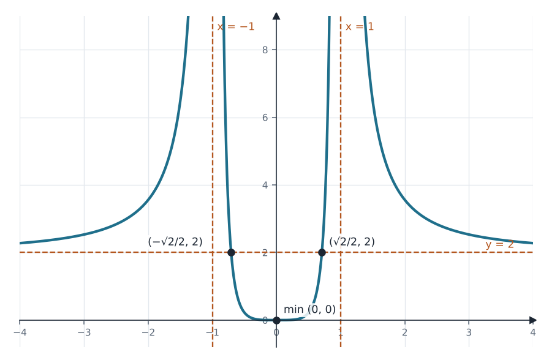
האסימפטוטה האופקית היא הגבול כש־\(x \to \pm\infty\). \(f\) שואפת ל־2, ולכן \(g\) שואפת ל־\(2\cdot 2 + c\).
שימוש ב: מתיחה והזזה
\(f(x) = \dfrac{2x+a}{x^{4}-1}\), והגרף עובר בנקודה \((0,1)\).
הנקודה \((0,1)\) על הגרף, ולכן מציבים \(x=0\) ומשווים ל־1.
תחום: המכנה שונה מ־0. חיתוך: המונה שווה ל־0. אסימפטוטה אנכית: המכנה מתאפס והמונה לא.
\(g\) היא בדיוק המונה של \(f'\). לכן מוצאים את הערך הגדול ביותר של \(g\): אם הוא שלילי, \(g\) שלילית תמיד, ומכאן ש־\(f'\) שלילית ו־\(f\) יורדת.
| x | \(x<0\) | \(0\) | \(0<x<\tfrac12\) | \(\tfrac12\) | \(x>\tfrac12\) |
|---|---|---|---|---|---|
| g′ | + | 0 | + | 0 | − |
| g | ↗ | אין קיצון | ↗ | מקס' | ↘ |
שימוש ב: נקודות קיצוןכלל המנהעלייה וירידה
מסמנים אסימפטוטות ונקודות חיתוך. מעלת המונה קטנה ממעלת המכנה, ולכן האסימפטוטה האופקית היא \(y = 0\). מסעיף ג הגרף יורד בכל ענף.
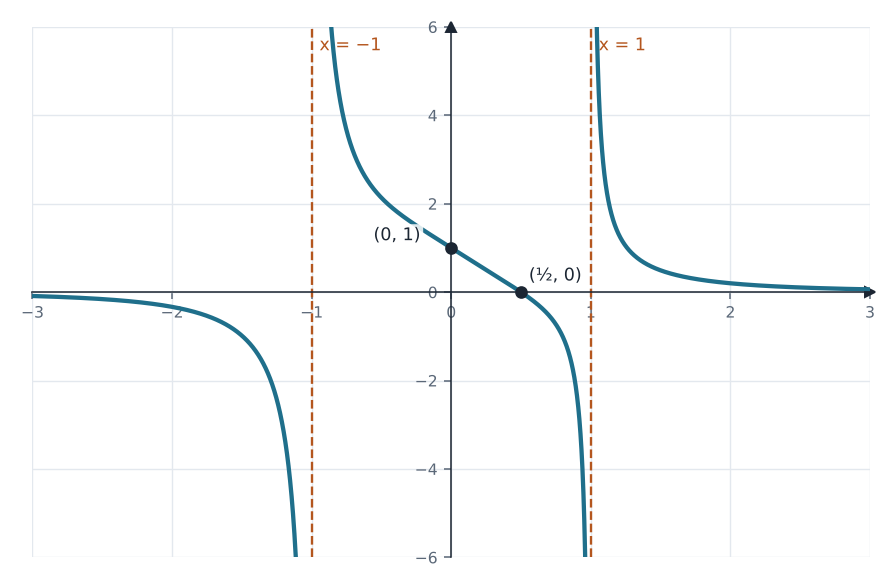
שימוש ב: אסימפטוטה אופקית
נתון ש־\(f\) היא הנגזרת של \(h\). לכן הסימן של \(f\) קובע היכן \(h\) עולה ויורדת, ומעבר של \(f\) מ־\(+\) ל־\(-\) הוא מקסימום של \(h\). את הסימן של \(f\) מוצאים מסימני המונה והמכנה.
| x | \(x<-1\) | \(-1<x<\tfrac12\) | \(\tfrac12\) | \(\tfrac12<x<1\) | \(x>1\) |
|---|---|---|---|---|---|
| \(2x-1\) | − | − | 0 | + | + |
| \(x^{4}-1\) | + | − | − | − | + |
| h′ = f | − | + | 0 | − | + |
| h | ↘ | ↗ | מקס' | ↘ | ↗ |
שימוש ב: h′ = f
\(f(x) = \dfrac{n(x-10)}{(x-5)^{2} - 16}\), \(n>0\). מפרקים את המכנה כהפרש ריבועים: \((x-5)^{2}-16 = (x-9)(x-1)\).
מפרקים את המכנה כהפרש ריבועים, \((x-5)^{2} - 4^{2}\), ואז קוראים ממנו את התחום והאסימפטוטות האנכיות. מעלת המונה קטנה ממעלת המכנה, ולכן האסימפטוטה האופקית היא \(y=0\). חיתוך עם \(y=0\) הוא בדיוק חיתוך עם ציר \(x\).
השלמה: בקובץ נעלם שם הפרמטר \(b\) בתנאי "\(>0\)".
\(g\) שווה ל־\(f\) בכל מקום חוץ מ־\(x=b\), שבו היא לא מוגדרת ("חור" בגרף). כדי שלא יהיה חיתוך עם האסימפטוטה צריך שהחור ייפול בדיוק על נקודת החיתוך היחידה.
שימוש ב: נקודת אי־רציפות ("חור")
גוזרים בכלל המנה. מכנה הנגזרת חיובי, ולכן הסימן נקבע לפי המונה, שהוא פרבולה "בוכה". בסקיצה מסמנים עיגול ריק בנקודה שהוצאה.
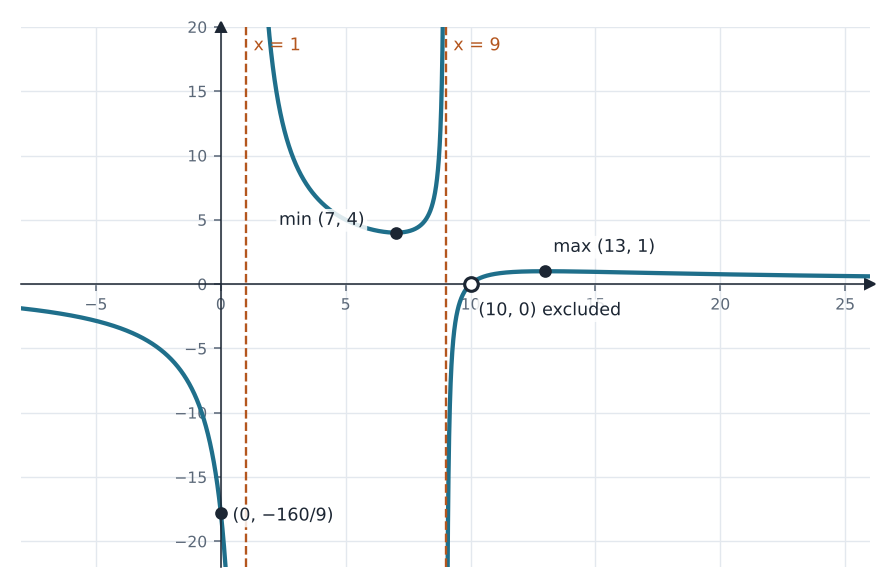
שימוש ב: כלל המנהנקודות קיצון
\(f(x) = \dfrac{n(x-11)^{2}(x-7)}{(x-13)^{2}(x-k)}\), \(n,k>0\). הישר \(x=13\) הוא האסימפטוטה האנכית היחידה, ויש לגרף בדיוק נקודת חיתוך אחת עם ציר \(x\).
השלמה: בקובץ נעלם שם הפרמטר \(k\).
אם \(k\) אינו אחד משורשי המונה, \(x = k\) הוא אסימפטוטה נוספת, בסתירה לנתון. לכן \(k\) הוא 13 (אותה אסימפטוטה) או אחד משורשי המונה (7 או 11), ובודקים כל מקרה לפי מספר נקודות החיתוך.
שימוש ב: אסימפטוטה אנכית ו"חור"
אחרי צמצום הגורם \((x-7)\) נשארת פונקציה פשוטה יותר, אבל \(x=7\) נשאר מחוץ לתחום (חור). גוזרים בכלל המנה, ומוציאים גורם משותף.
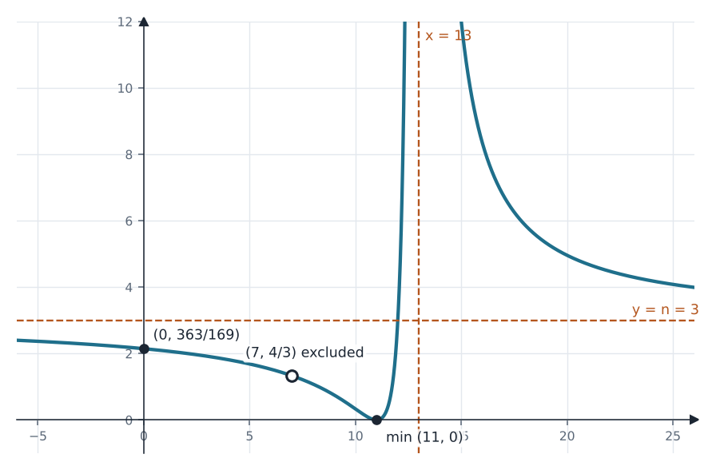
שימוש ב: כלל המנהנקודות קיצוןאסימפטוטה אופקית
מסעיף ב יודעים ש־\(f(0) = \tfrac{121n}{169}\). משווים לערך הנתון.
הכפל ב־\((x-13)^{2}\) מבטל את המכנה, אבל התחום של \(f\) נשאר: מקבלים פרבולה עם שני חורים. ישר אופקי \(y = L\) חותך פרבולה "מחייכת" בשתי נקודות מעל הקדקוד, ולכן מחפשים את הערכים שבהם אחת הנקודות נופלת בחור, ואת הקדקוד.
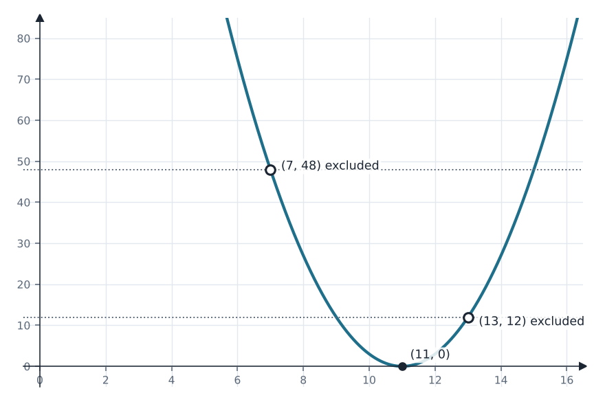
\(f(x) = \dfrac{x^{4}+ax^{2}+b}{x^{5}-4x^{3}}\). לפונקציה שתי נקודות אי־רציפות סליקה, היא עוברת ב־\((1,0)\), ויש לה אסימפטוטה אנכית אחת בלבד.
נקודת אי־רציפות סליקה ("חור") נוצרת כשגורם במכנה מצטמצם עם גורם במונה. המכנה מתאפס ב־\(0\) וב־\(\pm 2\). בודקים איפה יכולים להיות החורים, ומציבים במונה.
שימוש ב: אסימפטוטה ו"חור"
משתמשים בצורה המצומצמת מסעיף א, וזוכרים שהחורים \(x = \pm 2\) נשארים מחוץ לתחום.
גוזרים בכלל המנה את הצורה המצומצמת. מכנה הנגזרת \(x^{4}\) חיובי, ולכן הסימן נקבע לפי \(3 - x^{2}\).
שימוש ב: כלל המנהנקודות קיצון
הפונקציה אי־זוגית (\(f(-x) = -f(x)\)), ולכן מספיק לשרטט ענף אחד ולשקף בראשית. מסמנים את החורים בעיגולים ריקים.
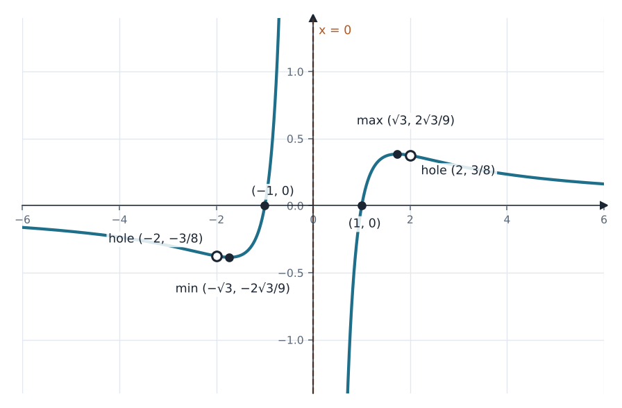
שימוש ב: אי־זוגיתאסימפטוטה אופקית
מספר נקודות החיתוך עם ישר אופקי \(y=k\) קוראים מהגרף: סופרים בכל ענף בנפרד. צריך לשים לב לחור בגובה \(\tfrac38\), שנמצא קצת מתחת למקסימום \(M\). בגלל הסימטריה לראשית, המספר עבור \(k\) שווה למספר עבור \(-k\).
| k | \(0\) | \(0<k<\tfrac38\) | \(\tfrac38\) | \(\tfrac38<k<M\) | \(M\) | \(k>M\) |
|---|---|---|---|---|---|---|
| ימני | 1 | 2 | 1 | 2 | 1 | 0 |
| שמאלי | 1 | 1 | 1 | 1 | 1 | 1 |
| סה״כ | 2 | 3 | 2 | 3 | 2 | 1 |
שימוש ב: עלייה וירידהסימטריה לראשית"חור"
\(f(x) = \dfrac{x^{2}-4x+4}{x-3} = \dfrac{(x-2)^{2}}{x-3}\).
המונה הוא ריבוע שלם, \((x-2)^{2}\). חקירה רגילה: תחום, אסימפטוטה, חיתוך, נגזרת בכלל המנה וטבלת סימנים שכוללת את האסימפטוטה \(x = 3\).
| x | \(x<2\) | \(2\) | \(2<x<3\) | \(3<x<4\) | \(4\) | \(x>4\) |
|---|---|---|---|---|---|---|
| f′ | + | 0 | − | − | 0 | + |
| f | ↗ | מקס' | ↘ | ↘ | מינ' | ↗ |
שימוש ב: אסימפטוטה אנכיתכלל המנהנקודות קיצון
מחלקים את המונה במכנה כדי לראות להיכן הגרף מתקרב רחוק מהאסימפטוטה. זה לא נדרש בשאלה, אבל עוזר לשרטט.
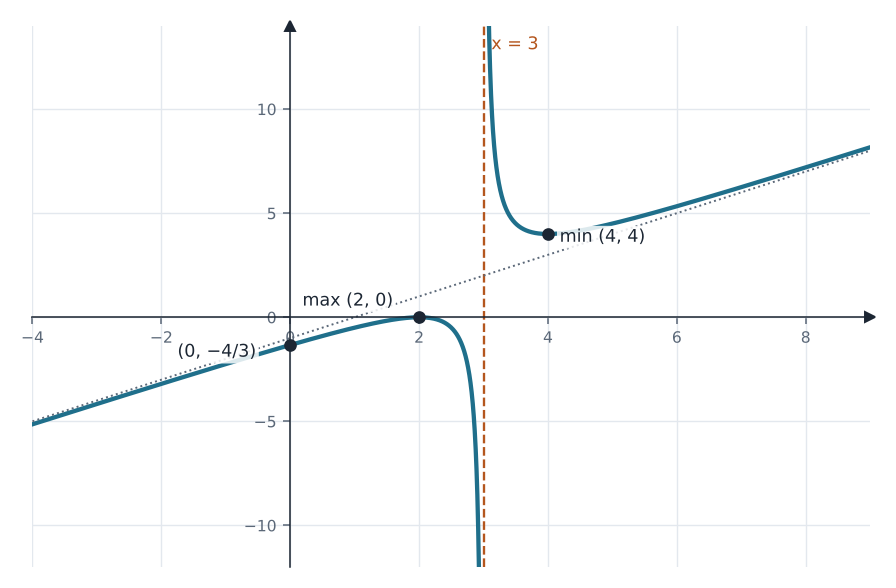
נתונה הנגזרת של \(g\), ולכן הסימן של \(f + \tfrac12\) קובע היכן \(g\) עולה. מביאים למכנה משותף, מפרקים את המונה, ובונים טבלת סימנים.
| x | \(x<1\) | \(1<x<2.5\) | \(2.5<x<3\) | \(x>3\) |
|---|---|---|---|---|
| \((2x-5)(x-1)\) | + | − | + | + |
| \(x-3\) | − | − | − | + |
| g′ | − | + | − | + |
| g | ↘ | ↗ | ↘ | ↗ |
שימוש ב: g′ נתונה: הסימן קובע